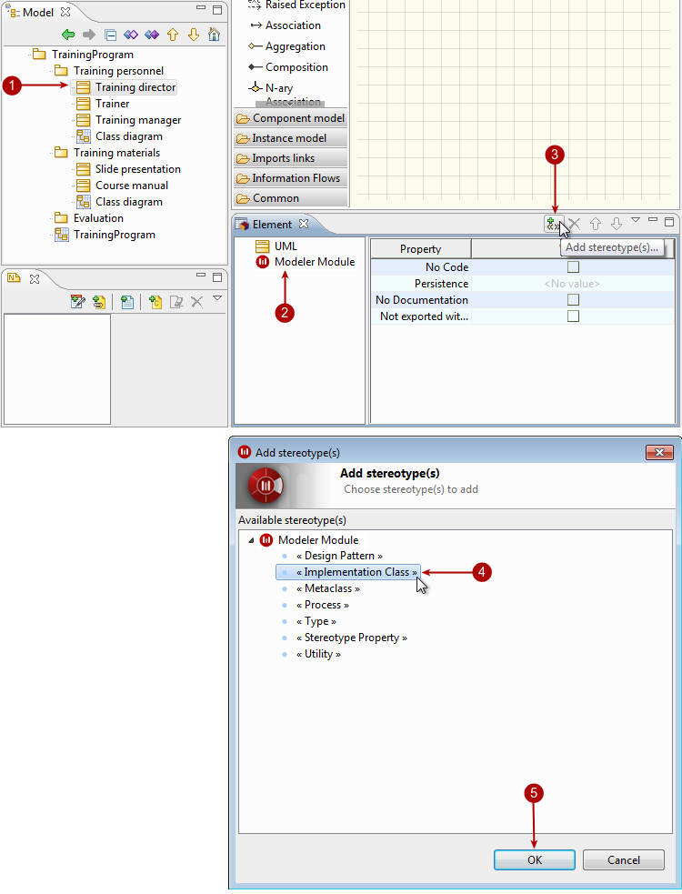

There are two ways to add stereotypes to elements:
Using the “Add stereotype(s)…” command from the context menu of the concerned element.
In the “Element” view on the concerned element.

Steps:
Select the element you want to add a stereotype to.
In the “Element” view, select the “Extensions” view.
Click on the “Add stereotype(s)…” button.
Select the stereotype of your choice from the list.
Click OK.